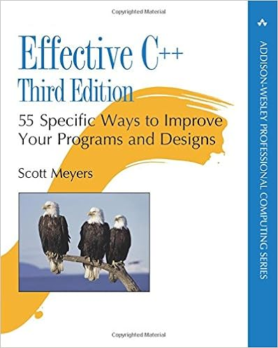

Rules/Notes from "Effective C++", 3rd edition by Scott Meyers
This book is a little outdated, like the use of std::tr1,
but still I learned a thing or two - for example, about private inheritance
and implicit/explicit conversions.

- View c++ as a federation of languages
- C, Object-Oriented C++, STL, and templates
- Prefer consts, enums, and inlines to #defines
- Use const whenever possible
- Make sure that objects are initialized before they are used
- Use the constructor member initialization list
- Use singletons over static global variables
- Know what functions c++ silently writes and calls
- Explicitly disallow the use of compiler-generated functions you do not want
- Declare destructors virtual in polymorphic base classes
- Only add virtual if the class itself will be used as a parent/base class,
as using virtual increases the object's size in memory
- Prevent exceptions from leaving destructors
- Never call virtual functions during construction or destruction
- Derived classes are not initialized yet while in the base class ctor
- Have assignment operators return a reference to *this
- Handle assignment to self in operator=
- Copy all parts of an object
- Use objects to manager resources
- Use smart pointers
- Use RAII technique (resource acquisition is initialization)
- Think carefully about copying behavior in resource-managing classes
- Some options: prevent copying, use resource counter, use deep copy, transfer resource ownership
- Provide access to raw resources in resource-managing classes
- Use the same form in corresponding uses of new and delete
- Avoid typedefs using arrays, as it hides wether you need to use delete or delete[] on the typedef'd object
- Store new'd objects in smart pointers in standalone statements
- Make interfaces easy to use correctly and hard to use incorrectly
- Treat class design as type design
- Prefer pass-by-reference-to-const to pass-by-value
- Don't try to return a reference when you must return an object
- Declare data members private
- Prefer non-member non-friend functions to member functions
- Declare non-member functions when type conversions should apply to all parameters
- Consider support for a non-throwing swap
- Postpone variable definitions as long as possible
- Minimize Casting
- dynamic casts in particular can be slow
- Avoid returning "handles" to object internals
- Pointers, references, iterators, ...
- Strive for exception-safe code
- Understand the ins and outs of inlining
- Minimize compiliation dependencies between files
- Avoid using objects when references and pointers will do
- Depend on class declarations instead of class definitions whenever you can
- Provide separate header files for declarations and definitions
- Use abstract interfaces for classes when possible (pimpl paradigm)
- Make sure public inheritance models "is-a"
- Avoid hiding inherited names
- Can use 'using ...' to make original base names visible in derived
- Differentiate between inheritance of interface and inheritance of implementation
- Consider alternatives to virtual functions
- i.e. template method design pattern, strategy design pattern, std::function objects
- Never redefine an inherited non-virtual function
- Never redefine a function's inherited default parameter value
- Default parameters are statically bound as opposed to dynamically bound
- Model "has-a" or "is-implemented-in-terms-of" through composition
- Use private inheritance judiciously
- Use multiple inheritance judiciously
- Understand implicit interfaces and compile-time polymorphism
- Implicit interfaces for templates are based on valid expressions at compile time
- Understand the two meanings of typename
- typename keyword can also be used to specify nested dependent type names
- Know how to access names in templatized base classes
- Can use "this" keyword, add a "using" statement, or add parent namespace (least desirable)
- Factor parameter-independent code out of templates
- Use member function templates to accept "all compatible types"
- Define non-member functions inside templates as friends when type conversions are desired
- Use traits classes for information about types
- Be aware of template metaprogramming
- Understand the behavior of the new-handler
- Understand when it makes sense to replace new and delete
- Adhere to convention when writing new and delete
- Write placement delete if you write placement new
- Pay attention to compiler warnings
- Familiarize yourself with the standard library, including tr1
- Familiarize yourself with Boost
<-- Back to home